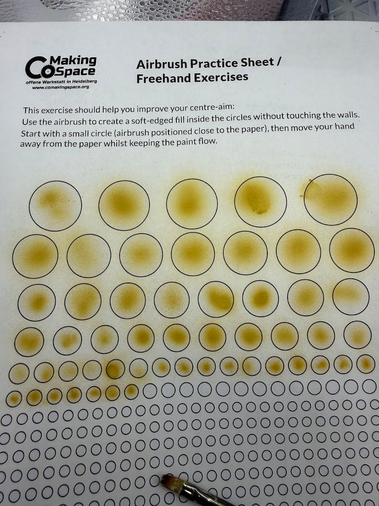

I didn't pick up an airbrush for a long time, and I don't think you need to rush either. Rattlecans and brushes did the job just fine for my first couple of years. These days I use one for priming and glows, so here's what I've learned easing into it.
Why this matters
An airbrush is the most expensive and most intimidating tool on most painting desks. It's easy to buy one too early and let it gather dust, or to expect it to fix things that are really brush-control problems. It helps most once you already know what you want it to do.
The short version
Don't rush it. When you do start, start with a cheap airbrush, practice on a sheet before a mini, thin your paint (I mix airbrush medium into almost everything), and use it where it shines: priming and soft glows.
How I eased into it
My first tries were in May 2025, and at the time I said it might be a game changer but the jury was still out. Months later, on Shadow King, I was still learning my way around it. That's normal.
A few habits that helped:
- Practice sheets first. Printed sheets of dots and circles are a low-stakes way to learn trigger control before you point it at a finished mini.
- Airbrush medium in almost everything. I mix The Army Painter's airbrush medium into almost all my paints, even the ones that are already formulated for the airbrush.
- A respirator for airbrush sessions. For a quick rattlecan batch I usually skip it, but longer airbrush sessions are when I wear one.

Where I use it now
- Priming. I prime with my cheap starter airbrush and Vallejo primers now, including zenithal priming: black first, then white from above at a consistent angle.
- Soft glows. On the Joker, I let the airbrush handle most of the glow creeping up his suit. See beginner OSL for the logic behind a glow.
- Smooth transitions on big areas. On Shadow King, I wanted the blending to feel like light khaki in outdoor sunlight.
Sponge or airbrush?
I still use both. I like the airbrush effect more, but it's not always the most practical choice, so the makeup sponges still come out for a quick glow or a small area.
What you actually need
An airbrush, a compressor and a hose to connect them (compressors often come with one). That's it.
Start with a cheap airbrush. A starter one will probably last you the first year while you learn how to use it without clogging it constantly, and how to take it apart and clean it without breaking it. I still use my cheap starter airbrush for all my priming, and save the nicer one for painting. Everything else in the gear box on this page (the nicer airbrush, the quick-release hose kit, the medium, the cleaner, the cleaning pot, the spray booth) is gear I use and like, but it's nice to have, not required. Start with the basics and add the rest if you find yourself wanting it.
Tradeoffs
- Setup and cleanup. A rattlecan or a sponge is ready in seconds. An airbrush means setup, thinning and cleaning every session.
- Indoors vs. outdoors. Rattlecans need decent weather. An airbrush with a portable spray booth works indoors year round.
- Cost. It's a real investment, so wait until you know what you'd use it for.
Checklist
- Wait until you know what you want it for
- Start with a cheap airbrush
- Practice sheets before minis
- Airbrush medium in the paint
- Respirator for longer sessions
- Start with priming and glows
Next: put it to work on a quick zenithal prime.